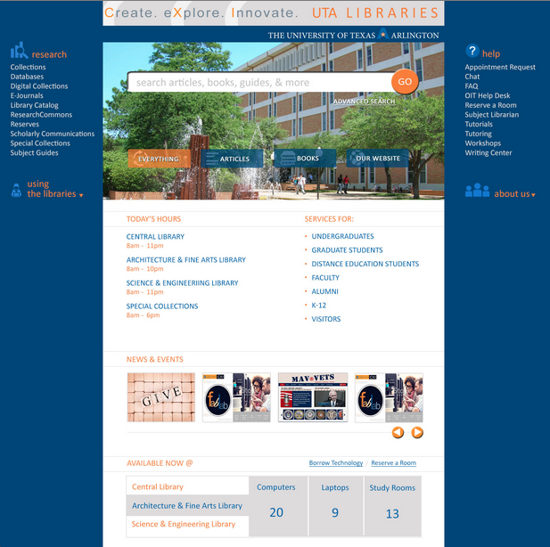

Current Site
New Site

Why are we redesigning?
- Improve user access to library services and materials
- Migrate from Cascade (proprietary) to Drupal (open source)
- Transition to an iterative design process to allow for constantly changing content and user needs
- Include data gathered from users, usability studies, and continued A/B/N testing
- Update content based on reorganization of library staff and changes in branding, services structures, and FabLab implementation
View our GitHub
Timeline
- User Study - Completed June 27
- Library Staff Focus Groups - Completed July 18
- Map of Content Hierarchy and Navigation - Completed July 24
- Map of Drupal structure - Completed August 15 - including content types, taxonomies, views, modules, rules, roles, permissions, and workflows
- Wireframe of Homepage - Completed July 31
- Design of Homepage - Completed August 25
- Establish Content Types, Taxonomies and Views and populate - Due on September 3
- Design of Internal Pages - Due on September 3
- Migrate remaining content from Cascade - Due on September 10
- Creation of custom templates and modules - Due on September 10
- Train content editors - September 10-17
- Beta Launch - October 1
- Usability Study - Results due on November 1
- Improvements based on usability study - Due on December 1
- Replace existing site - December 15
- Continued A/B/N testing - forever
Documentation Examples
Content Types
Rules
Taxonomies
Views